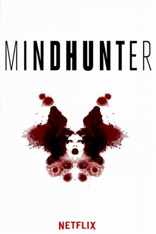
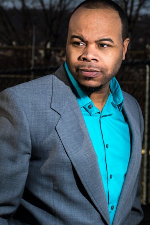

 
 IMDB-Wertung: 8.6 / 10
IMDB-Wertung: 8.6 / 10  Metascore: 0
Metascore: 0 
In the late 1970s two FBI agents expand criminal science by delving into the psychology of murder and getting uneasily close to all-too-real monsters.
Jahr: 2017
Dauer: 60 Minuten
FSK:
Land: USA Studio: NetflixTonspuren: DD5.1 - ,
Untertitel: Deutsch, Englisch,
Auflösung: 720p (1280x720) Größe: 819 MB
Genre: Thriller, Drama, Krimi, TV-Serie
Regisseur:  David Fincher, Andrew Douglas, Asif Kapadia
David Fincher, Andrew Douglas, Asif Kapadia
Drehbuch: Joe Penhall
Soundtrack:
Darsteller:
 Jonathan Groff als Holden Ford
Jonathan Groff als Holden Ford Holt McCallany als Bill Tench
Holt McCallany als Bill Tench Cotter Smith als Shepard
Cotter Smith als Shepard- Sonny Valicenti als Dennis Rader
- Anna Torv als Wendy
- Hannah Gross als Debbie
- Cameron Britton als Edmund
- Alex Morf als Detective Mark Ocasek
- Joe Tuttle als Greg Smith
 Happy Anderson als Jerry Brudos
Happy Anderson als Jerry Brudos- Jesse C. Boyd als Frank Janderman
- Duke Lafoon als Detective Gordon Chambers
- Stacey Roca als Nancy Tench
- Lee R. Sellars als Ninkovich
- Gary Warden als Co-worker
- David H. Holmes als Cody Miller
- Julia Crockett als Sissy Miller
 Felix Solis als Detective Molina
Felix Solis als Detective Molina Tommy Nohilly als Jim Conor
Tommy Nohilly als Jim Conor- Jordyn DiNatale als Julie
 Jordan Gelber als Peter Rathman
Jordan Gelber als Peter Rathman- Greg Lang als Prison Guard Jim
- Thomas Philip O'Neill als Leo Buchanan
- Ben Mathews als Trainee Mike
 Peter Murnik als Detective Carver
Peter Murnik als Detective Carver- Judith Delgado als Rosemary Gonzales
- Zach Steffey als Trainee Chris
- Chris James Boylan als Trainee Sullivan
- Courtney DeCosky als Iowa Reporter #1
- Paul Hickert als Iowa Police Captain
- David Bodenschatz als Iowa Police Officer #2
- Ari Blinder als Iowa Police Officer #3
- Alexander Stine als Iowa Police Officer #3
- Patrick Noonan als Iowa Police Officer #4
 Thomas Francis Murphy als Detective Frank McGraw
Thomas Francis Murphy als Detective Frank McGraw-  Georin Aquila als Prison Guard
- David Breda als Inmate
- Gregory Bromfield als FBI Staff
- Benjamin J. Cain Jr. als Prison Officer #1
- Grayson Campbell als Student
- Robert DiDonato als Officer Blessing
- Chris Drexel als Prisoner
- Evander Duck Jr. als William
- Todd Faulkner als Detective Barr
 Rhoda Griffis als Esther Mayweather
Rhoda Griffis als Esther Mayweather Kenneth Israel als Tony
Kenneth Israel als Tony- Cynthia Mace als Dwight's Mom
 Christopher Mann als Deputy Warden Armstrong
Christopher Mann als Deputy Warden Armstrong- Robert Neal Marshall als Professor Ezra
- Frankie Palombi als Neighbor
Datei: X:\HD-Serien\Mindhunter S01\Mindhunter S01E01.mkv seit 13.10.2017
Festplatte: HD Serien(I-ST)
 Es gibt insgesamt 182 Filme in der Gruppe 'HD-Serien'
Es gibt insgesamt 182 Filme in der Gruppe 'HD-Serien'
")